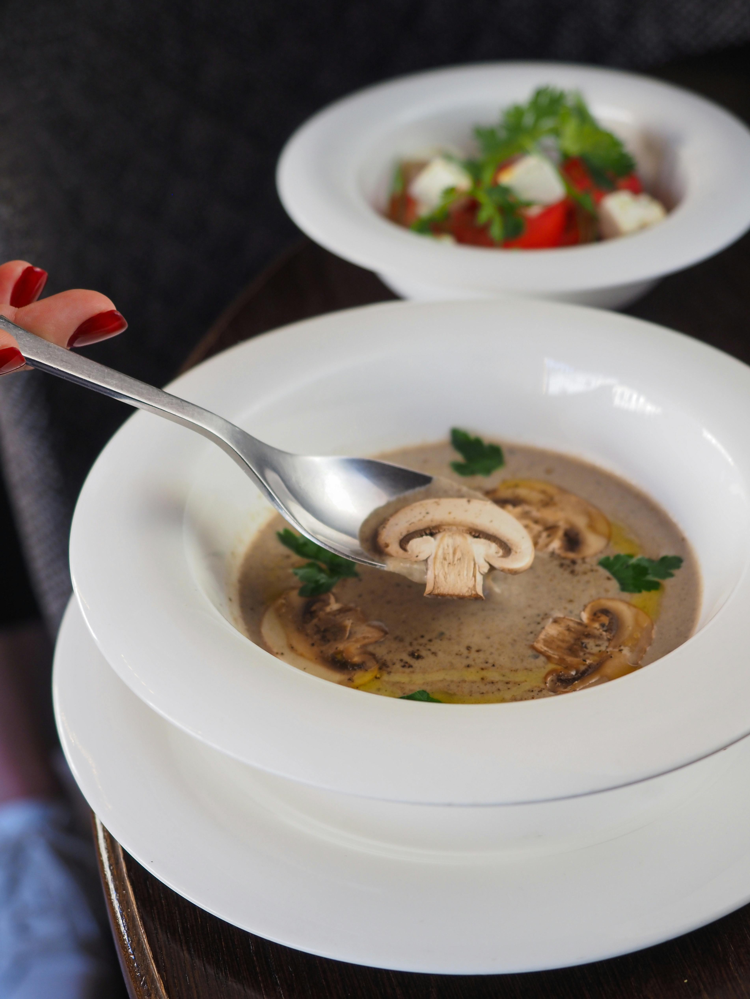

Mushroom Soup Recipe

Description
Your warm companion on a cold, winter night. This dish takes no time to prepare and cook.
Follow through this recipe to make your night less colder, and more comfortable.
Ingredients
- Fresh mushroom, sliced.
- Butter.
- Onions, chopped.
- A cup of milk.
- Two cups of chicken broth.
- Three tablespoons all-purpose flour.
- Chopped fresh parsley.
- Ground black pepper.
Steps
- Melt butter over medium heat. Add onions, cook and stir until softened.
- Add mushrooms and sauté for 5 more minutes.
- Stir in broth, then reduce heat to low. Cover and simmer for 15 minutes.
- Whisk millk and flour together in a separate bowl. Stir into soup until blended.
- Add fresh parsley, salt, and ground black pepper. Stir over low heat until warmed through.
- Serve immediately and enjoy!